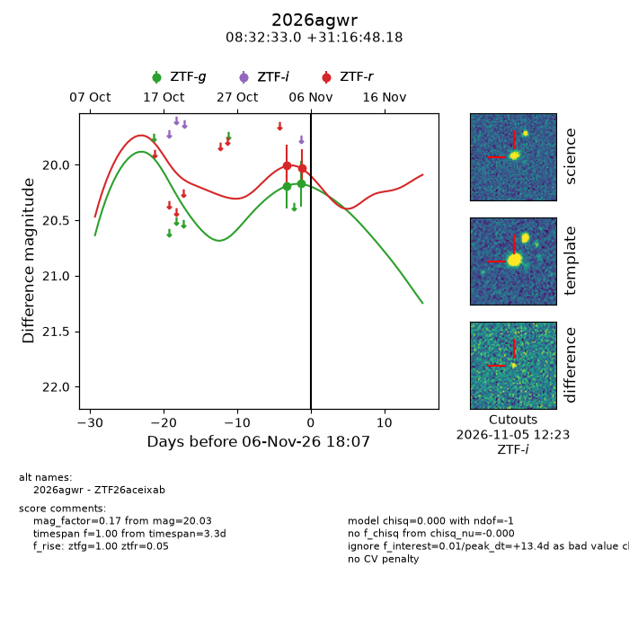
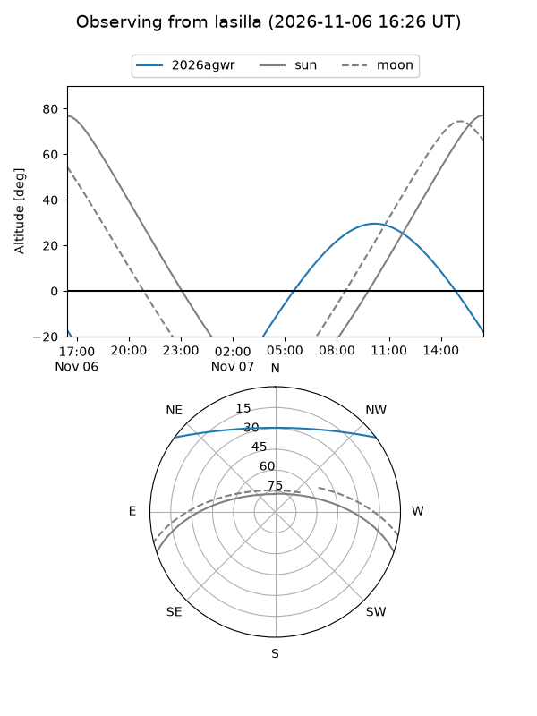
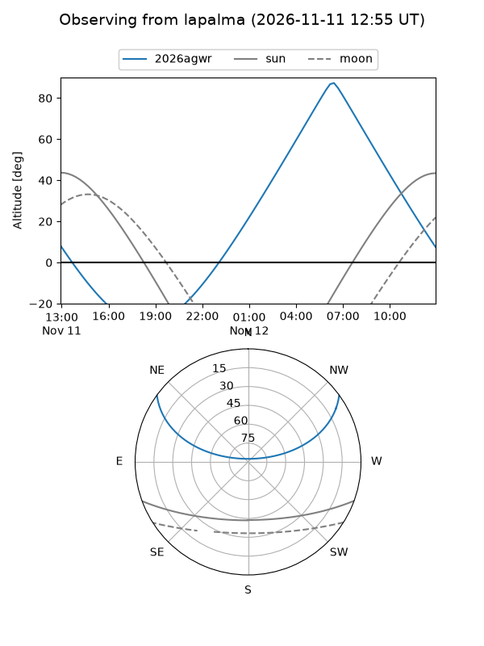
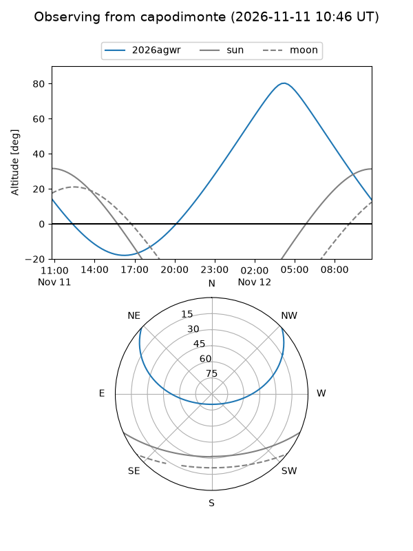
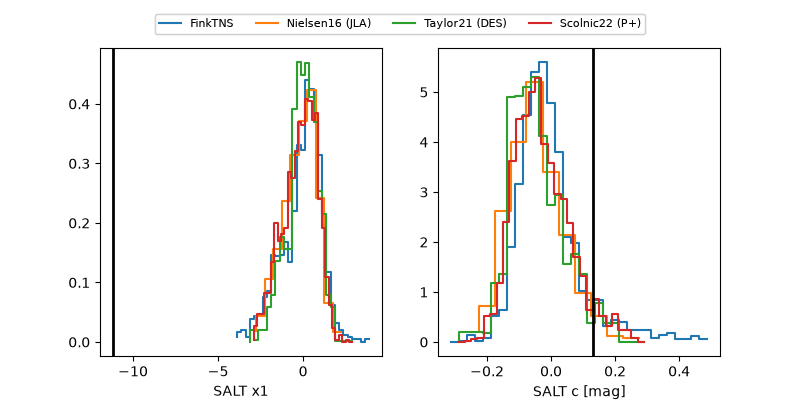

2026agwr
Target 2026agwr at 2026-11-06 18:09
Aliases and brokers:
FINK-ZTF: ztf.fink-portal.org/ZTF26aceixab
Lasair-ZTF: lasair-ztf.lsst.ac.uk/objects/ZTF26aceixab
ALeRCE-ZTF: alerce.online/object/ZTF26aceixab
YSE-PZ: ziggy.ucolick.org/yse/transient_detail/2026agwr
TNS name: wis-tns.org/object/2026agwr
Direct TNS query: direct search
alt names
ZTF26aceixab (ztf,fink_ztf)
2026agwr (tns,yse)
Coordinates:
equatorial (ra, dec) = 128.1373,+31.28005
equatorial (HMS+DMS) = 08:32:32.96,+31:16:48.18
galactic (l, b) = (191.9938,+34.16288)
Flags:
peak dt: +13.4
Photometry:
last ztfg=20.17, ztfr=20.03
2 ztfg, 2 ztfr detections
Lightcurve

Visibility



Additional plots
